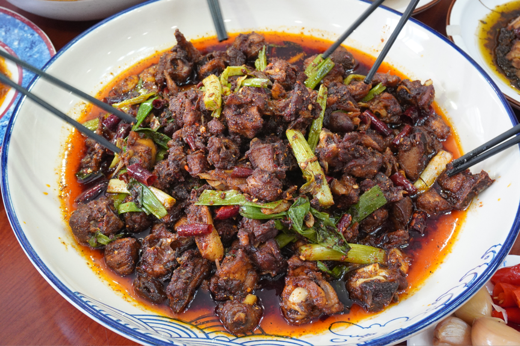
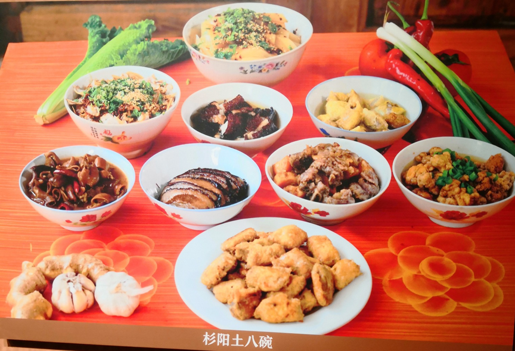

馬幫饮食文化
Horse caravan cuisine
馬幫菜起源於博南古道的馬幫，因路途遙遠，險象環生，馬幫人只能日夜兼程，只有在吃飯睡覺時才能停下奔波的步伐。因此對於馬幫而言，簡單、方便、利於保存、熱量高、耐餓是烹飪食物的基本原則，經過漫長時間的飲食習慣養成，馬幫的飲食慢慢演變成一種飲食文化——即「馬幫菜」，雖然今日馬幫已從歷史長河中淡出，但馬幫菜以其獨特的韻味得到了傳承和發揚。
Horse caravan cuisine originated from the ancient road of Bonan. Because of its long distance and dangerous surroundings, Horse caravan people can only travel day and night. Only when they eat and sleep can they stop running. Therefore, for the Horse caravan, the basic principles of cooking food are simplicity, convenience, preservation, high calorie and hunger tolerance. After a long period of cultivation of eating habits, the Horse caravan cuisine gradually evolved into a kind of dietary culture, that is, horse gangs' food. Although the horse gangs have faded out from the long history, Horse caravan cuisine is unique. The special charm has been inherited and developed.
永平黄焖鸡與中國最古老的商道 -博南古道有着千絲萬縷的聯繫。當時為了滿足馬幫補充能量、耗時快的飲食需求，於是便有了從宰殺到上桌僅需15分鐘的永平黃燜雞。因其耗時短，用料鮮，所以選料和烹飪方法都有嚴格的要求，以保證味道的鮮美，雖然不同地區的選材和作法都不一樣，但雞一定是都是當地優質土仔雞。後續又衍生了木瓜雞、大塊雞等新作法。
There are inextricably linked with Bonan Ancient Road, the oldest commercial road in China. At that time, in order to meet the energy and time-consuming dietary needs of the horse gangs, Yongping yellow-stewed chicken, which only took 15 minutes from slaughter to serving, was available. Because of its short time-consuming and fresh materials, there are strict requirements for material selection and cooking methods to ensure the delicious taste. Although the materials and methods in different areas are different, chickens must be local high-quality native chickens. New practices such as papaya chicken and large chicken have been developed in the follow-up.
土八碗是舊時人們展現家族門第級別的一種飲食文化體現，一桌有八道固定菜品，菜品以豬肉為主要食材，用不同烹飪手法製作而成，讓食客可以一飽口福。此外，土八碗與四川飲食文化也有著密不可分的聯繫，因古時博南古道由四川作為起點，四川八大碗的飲食文化便隨馬幫滲透到沿途各地，於是便有了今日的杉陽土八碗。
Tuba Bowl is a kind of dietary culture which reflects the family rank in the old times. There are eight fixed dishes in one table. Pork is the main ingredient of the dishes, which are made by different cooking methods, so that the diners can enjoy a full meal. In addition, Tuba Bowl is closely related to Sichuan food culture. Since the ancient Bonan Road was originated from Sichuan, the food culture of Sichuan Eight Bowls permeated all over the road with the help of horse gangs, and today there are Shanyang Tu ba Bowls.